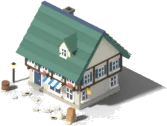
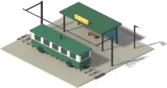

Sen çiz, onlar kursunZone it, they build it
Yolların yanına konut, ticaret ve sanayi bölgeleri boya. Talep varsa yerleşimciler gelir ve inşa eder. Üç talep çubuğu şehrin ne istediğini söyler.Paint residential, commercial and industrial zones next to your roads. If there's demand, settlers move in and build. Three demand bars tell you what the city wants.
Dört çağFour eras
Ahşap evler ve bir kuyuyla başla; sanayi çağından modern şehre, oradan metropole büyü. Elektrik ulaşan mahalleler yeni tarzda yenilenir.Start with timber houses and a well, then grow through the industrial age and the modern city into the metropolis. Neighbourhoods rebuild in the new style once power arrives.
Şebekeler ve hizmetlerUtilities and services
Su ve elektrik yollar boyunca akar. Polis, itfaiye, sağlık, okul, park ve çöp; her birinin bir kapsama alanı ve bütçesi var.Water and power flow along your roads. Police, fire, clinics, schools, parks and waste each cover an area and have a budget.


Gerçek trafikReal traffic
Her yolculuk gerçek bir rota izler, dolan yol tıkanır. Cadde, bulvar, tek yönlü ve ağaçlı yollar; tramvay, otobüs ve metro.Every trip takes a real route and roads jam when full. Avenues, boulevards, one-way and tree-lined roads; trams, buses and the metro.
Yaşayan şehirA city with a life
Akşam pencereler yanar, sokaklar dolar, fabrikalar tüter. Yangınlar, şenlikler, turistler ve ticaret heyetleri; danışmanların neyin yanlış gittiğini söyler.Windows light up at dusk, streets fill, factories smoke. Fires, festivals, tourists and trade missions; your advisors tell you what's wrong.
Sen yokken deWhile you're away
Bir oyun günü yaklaşık bir gerçek dakika; uygulama kapalıyken şehir 12 saate kadar yaşamaya devam eder. İstersen giriş yap, şehrin cihazların arasında seninle gelsin.A game day is about a real minute, and the city keeps living for up to 12 hours while the app is closed. Sign in if you like and your city follows you.